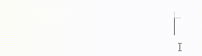

Articles ܡܐܡܪ̈ܐ
A collection of scholarly articles on Syriac language, culture, and the history of the Nasranies of India, exploring the rich heritage of Saint Thomas Christians.
-
Typing Karshon in LibreOffice Writer on Windows
A comprehensive guide to setting up and using Karshon (Suriyani Malayalam) typing in LibreOffice Writer on Windows. This step-by-step tutorial covers installation of required components, configuration settings, and troubleshooting tips for typing in Karshon script.
Read Article
-
Suriyani Malayalam Script Correspondence
A correspondence between Suriyani Malayalam (Karshon) script and modern Malayalam script. This article provides detailed mappings and examples of how Malayalam characters are represented in the Karshon script, helping readers understand and master the traditional writing system.
Read Article -
Parishudhathmave nee ezhunnalli
A Karshon (Suriyani Malayalam) rendering of the Malayalam hymn "Parishudhathmave nee ezhunnalli" with parallel text. This Pentecost hymn, written by late Fr. Abel Periyappuram CMI is commonly sung in the Syro Malabar liturgy, presented with the original Malayalam text alongside its Syriac script rendering.
Read Article -
Turgama d'evangelion
A Karshon (Suriyani Malayalam) rendering of the Malayalam translation of the Turgama of the Evangelion, as used in the Syro Malabar Qurbana. This article presents the parallel text in both Karshon script and Malayalam, preserving this important liturgical hymn.
Read Article -
Beth Aprem: Nazrani Dayra
An exploration of the Dayra tradition among the Saint Thomas Christians of India. This article examines the unique synthesis of Syriac monastic traditions and Indian cultural expressions in the Nazrani Dayra, highlighting their historical significance and contemporary relevance in preserving the distinctive identity of the Syro Malabar Church.
Read Article